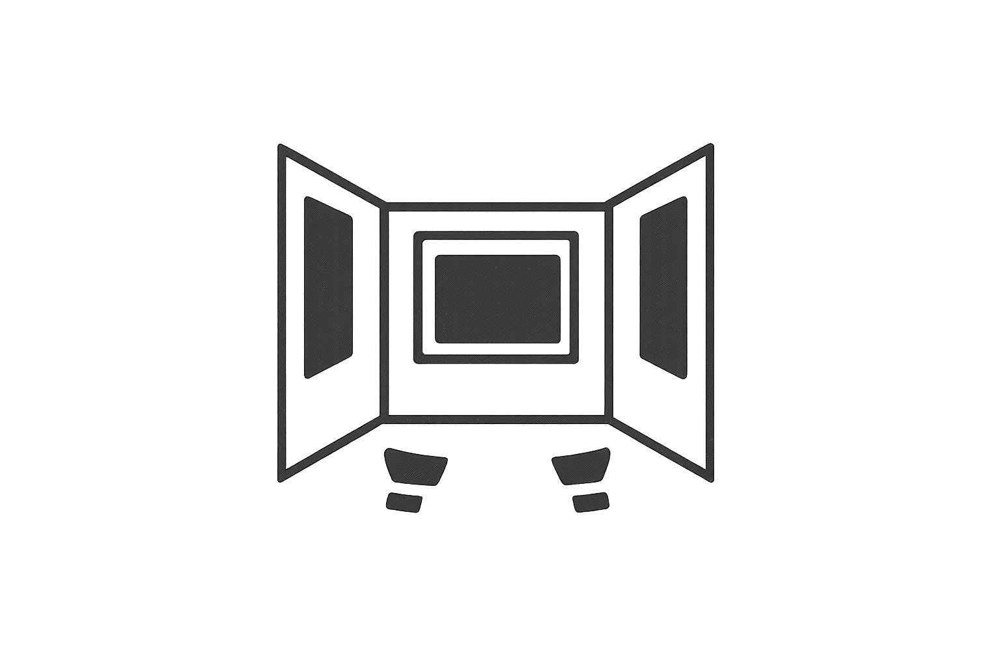
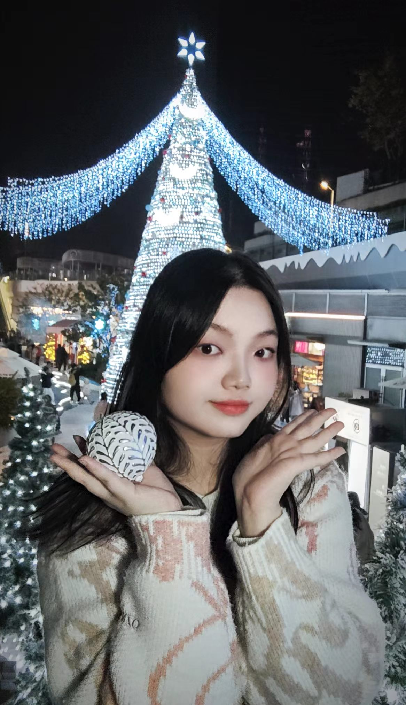
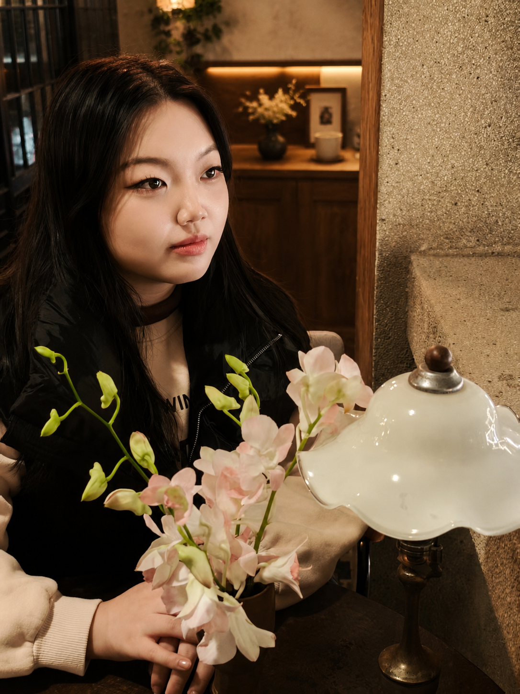
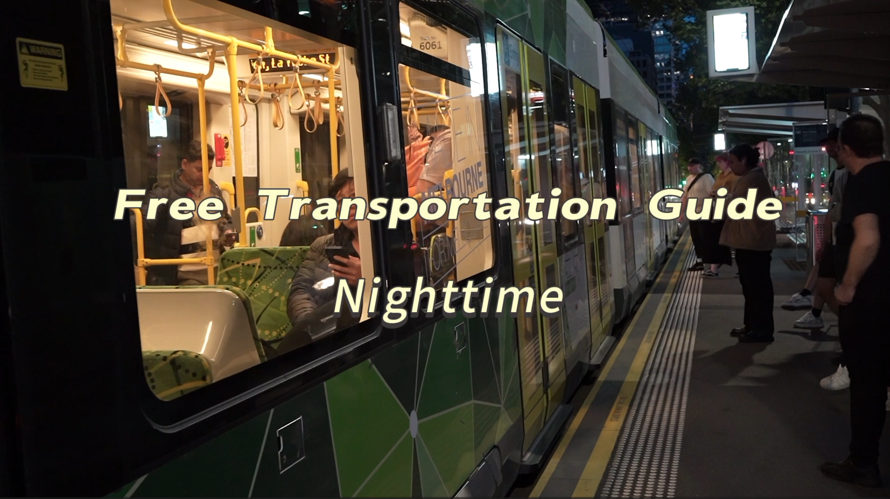
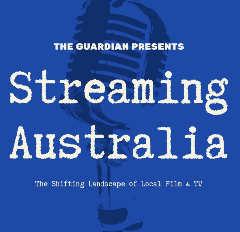
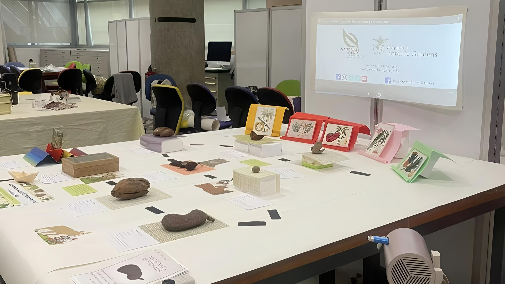
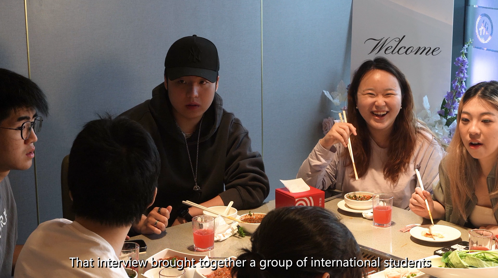
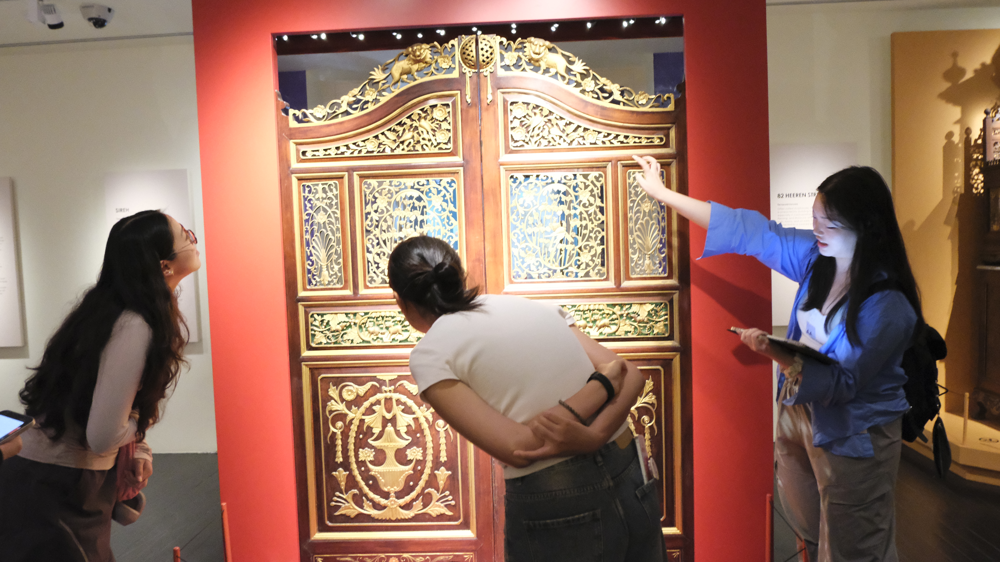
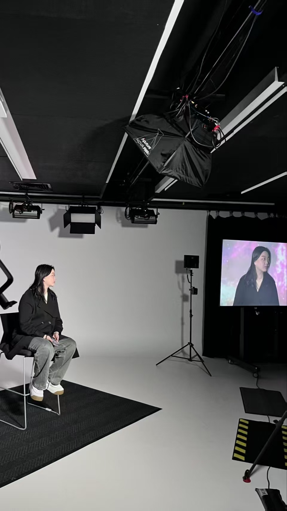
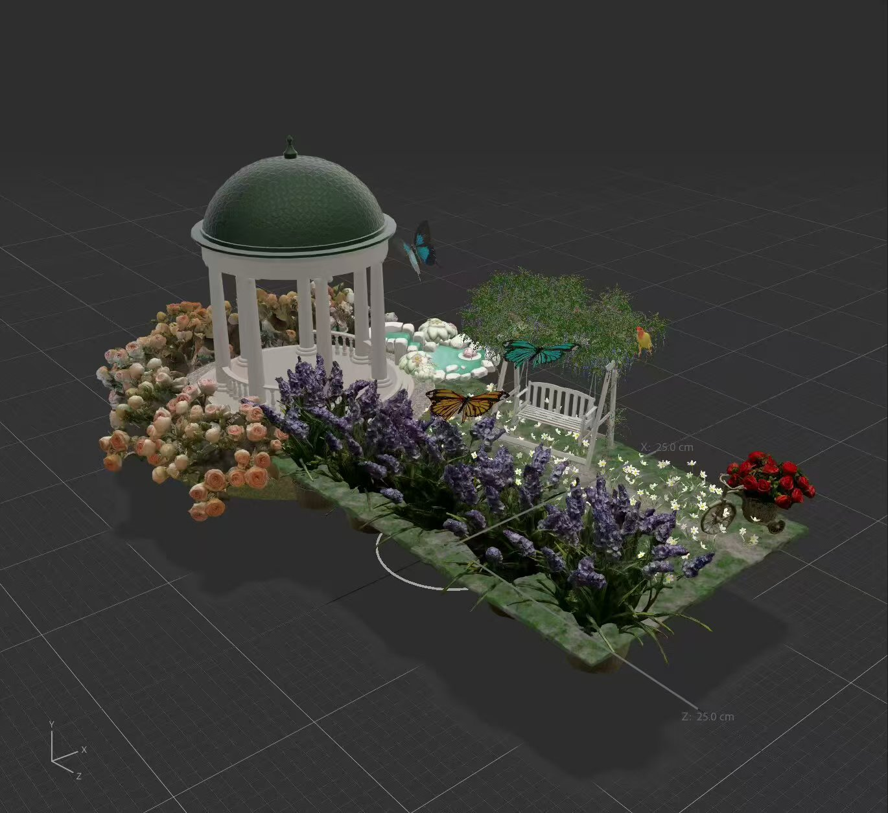

我是一名影像创作者，专注于电影制作、
文化传播与策展实践。
我的创作探索影像如何连接人、
空间与记忆。



我的创作实践围绕影像、声音与空间展开，
关注人与环境之间的情感连接，以及日常经验如何被记录、保存与重新观看。
在电影制作、文化传播与策展实践中，
我探索不同媒介如何承载个人记忆与集体叙事。
从纪录片到展览媒体，我关注故事发生的场所、人物关系以及影像背后的文化语境。
我的学习经历涵盖媒体传播与博物馆策展实践，
使我能够从视觉表达与文化研究的角度理解影像创作，
并持续探索影像如何连接人与空间、过去与当下。

墨尔本公共交通与城市生活观察
Exploring urban mobility,
public space and everyday stories.

The Shifting Landscape of Local Film & TV
澳大利亚本土影视产业变化与声音叙事探索。

种子的故事：东南亚植物标本科普展
Botanical exhibition exploring
seeds, specimens and ecological stories
through exhibition design and interpretation.

《火锅——穿过半个地球》
Exploring friendship,
belonging and cultural identity
among international students.



Let's create meaningful stories together.
Email:
wenjingyang0055@outlook.com